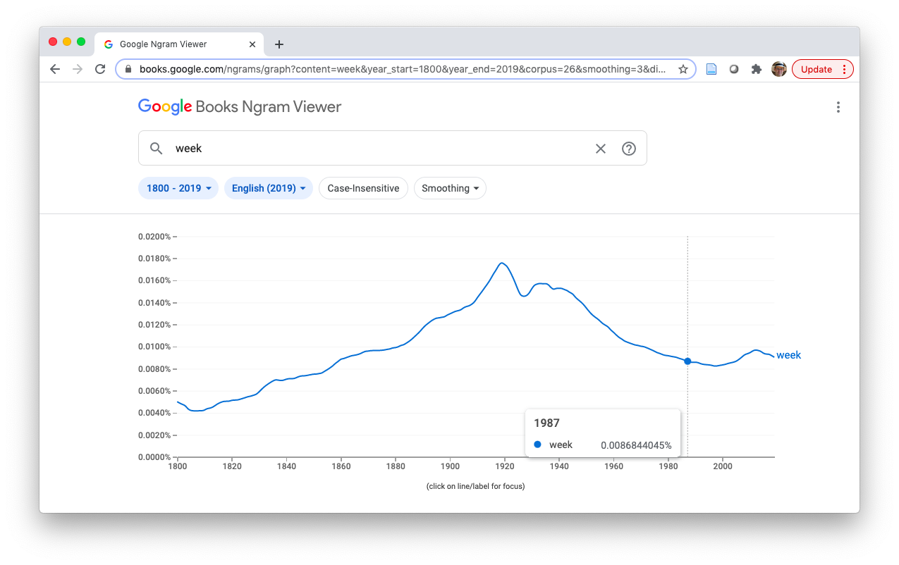
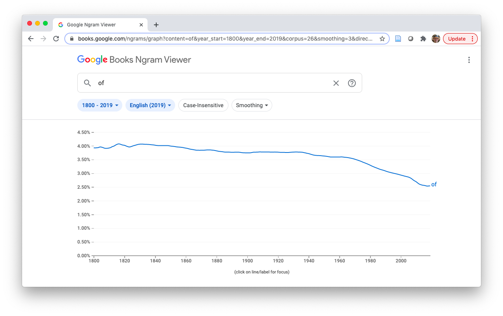

Rank/frequency dependence

Maciej Eder
Maciej Eder
Institute of Polish Language (Polish Academy of Sciences)
ICLAP 2020, 19th November 2020
It is a truth universally acknowledged, that a single man in possession of a good fortune, must be in want of a wife. However little known the feelings or views of such a man may be on his first entering a neighbourhood, this truth is so well fixed in the minds of the surrounding families, that he is considered the rightful property of some one or other of their daughters.
“My dear Mr. Bennet,” said his lady to him one day, “have you heard that Netherfield Park is let at last?” Mr. Bennet replied that he had not.
“But it is,” returned she; “for Mrs. Long has just been here, and she told me all about it.” Mr. Bennet made no answer.
“Do you not want to know who has taken it?” cried his wife impatiently. “You want to tell me, and I have no objection to hearing it.” This was invitation enough.
It is a truth universally acknowledged, that a single man in possession of a good fortune, must be in want of a wife. However little known the feelings or views of such a man may be on his first entering a neighbourhood, this truth is so well fixed in the minds of the surrounding families, that he is considered the rightful property of some one or other of their daughters.
“My dear Mr. Bennet,” said his lady to him one day, “have you heard that Netherfield Park is let at last?” Mr. Bennet replied that he had not.
“But it is,” returned she; “for Mrs. Long has just been here, and she told me all about it.” Mr. Bennet made no answer.
“Do you not want to know who has taken it?” cried his wife impatiently. “You want to tell me, and I have no objection to hearing it.” This was invitation enough.
raw occurrences of words:
##
## the to of and her i a in was she that it not you
## 4330 4161 3609 3584 2227 2065 1955 1880 1847 1710 1577 1532 1426 1357relative frequencies:
##
## the to of and her i a in was she that it not you
## 3.49 3.36 2.91 2.89 1.80 1.67 1.58 1.52 1.49 1.38 1.27 1.24 1.15 1.09
Given:
is it possible to find the ‘nearest neighbor’ among the available candidates?
## the and to of a was I in
## coben_breaker 3.59 1.18 2.16 1.38 2.52 1.50 1.45 1.18
## coben_dropshot 3.59 1.18 2.12 1.27 2.38 1.57 1.50 1.04
## coben_fadeaway 3.93 1.45 2.20 1.21 2.31 1.32 1.33 1.20
## coben_falsemove 3.63 1.61 2.13 1.24 2.40 1.38 1.35 1.11
## coben_goneforgood 3.83 1.82 2.15 1.18 1.96 1.73 3.81 1.13
## coben_nosecondchance 4.10 1.59 2.27 1.21 1.99 1.76 3.85 1.15
## coben_tellnoone 4.10 1.79 2.03 1.25 2.18 1.42 3.50 1.16
## galbraith_cuckoos 4.52 2.27 2.49 2.18 2.14 1.66 1.13 1.38
## lewis_battle 5.05 3.40 2.14 2.14 1.96 1.51 0.90 1.28
## lewis_caspian 4.87 3.59 2.15 2.14 2.17 1.35 1.12 1.21
## lewis_chair 4.97 3.22 2.00 2.10 2.35 1.40 1.07 1.21
## lewis_horse 4.89 3.49 2.31 2.22 2.32 1.40 1.20 1.30
## lewis_lion 5.14 3.70 2.29 2.19 2.10 1.35 0.81 1.16
## lewis_nephew 4.48 2.86 2.07 2.23 2.31 1.57 1.18 1.35
## lewis_voyage 5.22 3.28 2.26 2.11 2.24 1.58 1.05 1.15
## rowling_casual 4.75 2.64 2.62 2.11 1.76 1.65 0.56 1.44
## rowling_chamber 4.41 2.34 2.35 1.88 2.00 1.48 0.88 1.17
## rowling_goblet 4.48 2.43 2.49 2.02 1.79 1.42 0.85 1.12
## rowling_hallows 4.70 2.47 2.24 1.87 1.45 1.13 0.53 1.00
## rowling_order 4.23 2.25 2.51 2.03 1.79 1.39 0.86 1.17## coben_breaker coben_dropshot coben_fadeaway
## coben_breaker 0.0000 0.6176 0.6164
## coben_dropshot 0.6176 0.0000 0.6059
## coben_fadeaway 0.6164 0.6059 0.0000
## coben_falsemove 0.6225 0.6392 0.6006
## coben_goneforgood 0.7093 0.7192 0.6827
## coben_nosecondchance 0.7219 0.7220 0.6936
## coben_tellnoone 0.7002 0.7211 0.6798
## galbraith_cuckoos 0.8730 0.9298 0.8923
## lewis_battle 1.1151 1.0911 1.0984
## lewis_caspian 1.1005 1.0912 1.0829
## lewis_chair 1.0981 1.0859 1.0729
## lewis_horse 1.0711 1.0559 1.0531
## lewis_lion 1.1282 1.1223 1.1275
## lewis_nephew 1.0982 1.1043 1.0877
## lewis_voyage 1.0683 1.0843 1.0618
## rowling_casual 0.9424 0.9849 0.9607
## rowling_chamber 1.0780 1.1059 1.0795
## rowling_goblet 1.0497 1.0624 1.0538
## rowling_hallows 1.0426 1.0496 1.0249
## rowling_order 1.0424 1.0661 1.0323


## Testing a given candidate against imposters...
##
## coben
##
## lewis
##
## rowling
##
## tolkien## coben lewis rowling tolkien
## 0.31 0.00 1.00 0.00


## [1] "the" "and" "week" "that" "'s" "last"
## [7] "is" "be" "of" "it" "we" "i"
## [13] "to" "was" "mr." "our" "my" "been"
## [19] "not" "u.s." "you" "new" "upon" "there"
## [25] "has" "says" "war" "york" "this" "n't"
## [31] "will" "s" "which" "for" "had" "very"
## [37] "have" "said" "are" "in" "city" "made"
## [43] "me" "a" "president" "her" "us" "she"
## [49] "his" "by" "united" "or" "at" "but"
## [55] "q!" "party" "committee" "your" "so" "as"
## [61] "street" "today" "men" "would" "with" "about"
## [67] "heart" "do" "any" "'d" "out" "all"
## [73] "if" "great" "army" "up"




